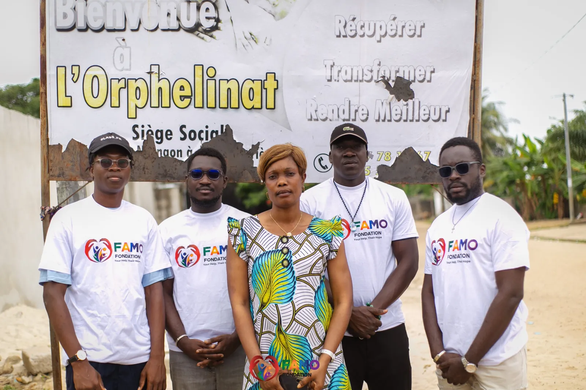
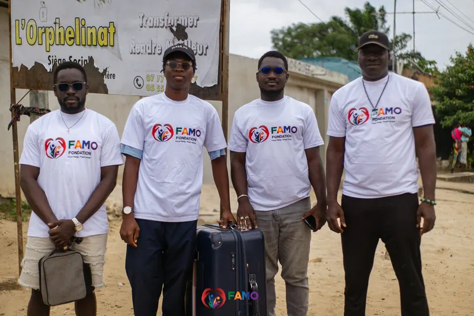
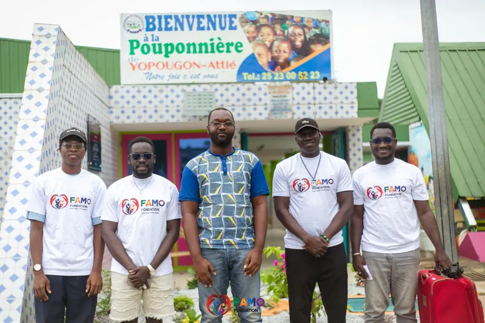

Une action, une vie.
La Fondation FAMO agit auprès des femmes et des enfants des zones rurales de Côte d'Ivoire : éducation de qualité, soins essentiels et soutien aux familles, pour des changements durables.
La Fondation FAMO
Organisation à but non lucratif fondée en 2023, la FAMO travaille avec les leaders locaux pour donner aux populations vulnérables — en premier lieu les femmes et les enfants — les moyens de bâtir un avenir meilleur.
- Des projets durables, ancrés dans les besoins réels des communautés
- Un accent sur l'éducation à fort impact et les soins de santé essentiels
- Une conviction : l'action collective transforme des vies
Nos programmes
Quatre axes d'action complémentaires pour un impact durable.
Éducation
Construire et équiper des écoles, former les enseignants et ouvrir l'horizon des enfants des zones rurales.
En savoir plusFormation professionnelle
Des compétences concrètes — menuiserie, couture, agriculture, informatique — pour l'autonomie économique.
En savoir plusSanté
Consultations gratuites, campagnes de vaccination et prévention pour la santé des mères et des enfants.
En savoir plusSoutien aux démunis
Un filet de sécurité pour les plus vulnérables : vivres, produits essentiels et secours d'urgence.
En savoir plus« Ensemble, nous avons le pouvoir de faire une vraie différence dans la vie de ceux qui en ont le plus besoin. »Coulibaly Mariam épouse Ouattara Présidente de la Fondation FAMO
Sur le terrain
Quelques moments forts de nos actions récentes.








Une action, une vie
Chaque don, petit ou grand, soutient nos programmes d'éducation, de santé et de solidarité auprès des familles des zones rurales de Côte d'Ivoire.
Faire un don